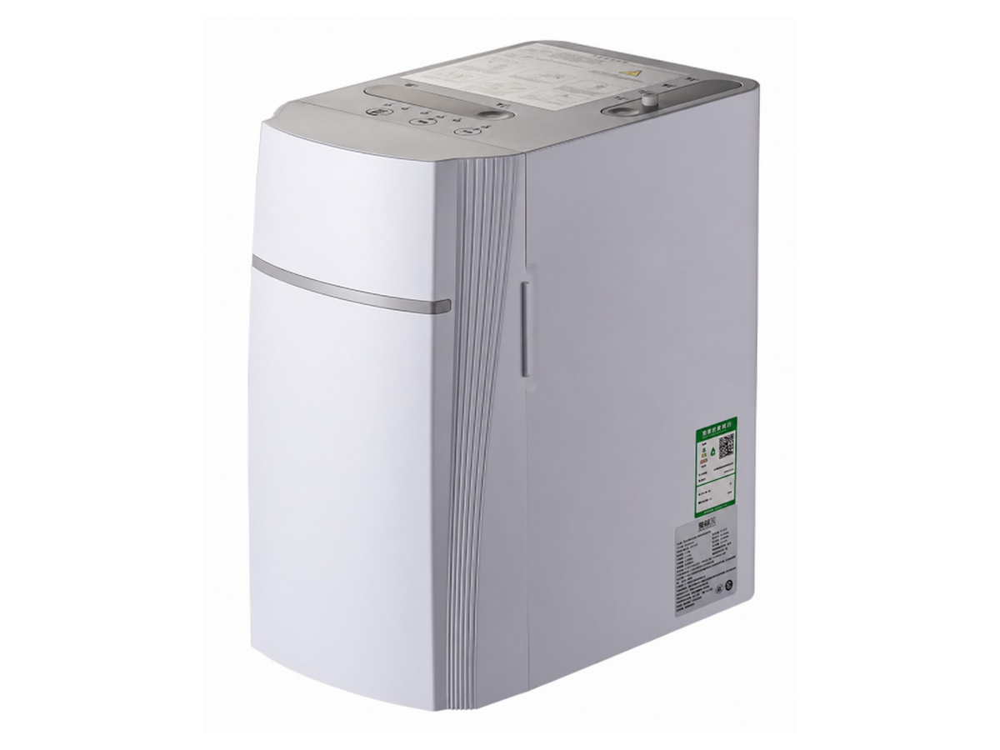
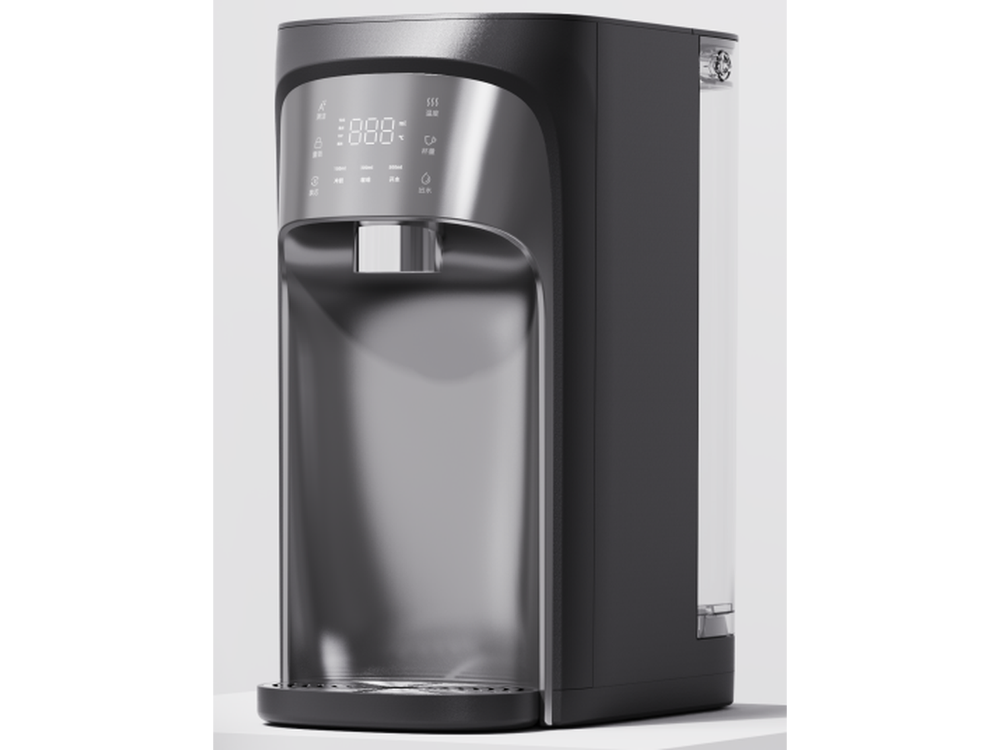

Bajo fregadero
Bajo fregaderoRP-U07
Purificador RO bajo fregadero de 400–600 GPD
SKU: RP-U07
MOQ: confirmar al consultar
Cada modelo a continuación es un modelo confirmado del catálogo. Los modelos candidatos no aparecen aquí.
46 modelos
Ningún modelo coincide con su búsqueda. Pruebe con otro SKU o limpie los filtros.
Caliente/Frío/Hielo es una vista seleccionada de modelos existentes. Las funciones disponibles varían según el modelo.
Bajo fregaderoPurificador RO bajo fregadero de 400–600 GPD
SKU: RP-U07
MOQ: confirmar al consultar

Bajo fregaderoRO bajo fregadero con calentamiento por acumulación
SKU: RP-U08
MOQ: confirmar al consultar
 Bajo fregadero
Bajo fregaderoPurificador RO de alta capacidad con acceso frontal
SKU: RP-U09
MOQ: confirmar al consultar
 Bajo fregadero
Bajo fregaderoPurificador RO de tres cartuchos
SKU: RP-U11
MOQ: confirmar al consultar
 Bajo fregadero
Bajo fregaderoSistema RO de cartucho extraíble sin herramientas
SKU: RP-U01
MOQ: confirmar al consultar
 Bajo fregadero
Bajo fregaderoSistema RO de doble accionamiento y salida ampliada
SKU: RP-U06
MOQ: confirmar al consultar
 Bajo fregadero
Bajo fregaderoPurificador RO compacto de dos cartuchos
SKU: RP-U12
MOQ: confirmar al consultar
 Bajo fregadero
Bajo fregaderoPurificador RO delgado de doble salida
SKU: RP-U14
MOQ: confirmar al consultar
 Bajo fregadero
Bajo fregaderoPurificador RO de agua hidrogenada bajo fregadero
SKU: RP-U04
MOQ: confirmar al consultar
 Bajo fregadero
Bajo fregaderoRO con grifo instantáneo de agua caliente y fría
SKU: RP-U02
MOQ: confirmar al consultar
 Bajo fregadero
Bajo fregaderoPurificador RO doméstico de alta capacidad
SKU: RP-U03
MOQ: confirmar al consultar
 Bajo fregadero
Bajo fregaderoPlataforma RO compacta de dos cartuchos
SKU: RP-U05
MOQ: confirmar al consultar
 Bajo fregadero
Bajo fregaderoComplemento de refrigeración bajo fregadero
SKU: RP-U15
MOQ: confirmar al consultar
 Bajo fregadero
Bajo fregaderoGrifo de calentamiento instantáneo de acero inoxidable
SKU: RP-U16
MOQ: confirmar al consultar
 Bajo fregadero
Bajo fregaderoPrefiltro de alto caudal de doble carcasa
SKU: RP-U17
MOQ: confirmar al consultar
 Sobremesa
SobremesaPurificador RO con jarra calentadora
SKU: RP-C07
MOQ: confirmar al consultar

SobremesaPurificador de sobremesa de cartucho todo en uno
SKU: RP-C08
MOQ: confirmar al consultar
 Sobremesa
SobremesaPurificador RO con hielo, agua caliente y fría
SKU: RP-C09
MOQ: confirmar al consultar
 Sobremesa
SobremesaRO de sobremesa con refrigeración por compresor
SKU: RP-C10
MOQ: confirmar al consultar
 Sobremesa
SobremesaPurificador RO con café recién molido
SKU: RP-C11
MOQ: confirmar al consultar
 Sobremesa
SobremesaPurificador de agua de sobremesa
SKU: RP-C12
MOQ: confirmar al consultar
 Sobremesa
SobremesaDispensador RO de calentamiento instantáneo
SKU: RP-C13
MOQ: confirmar al consultar
 Sobremesa
SobremesaPurificador instantáneo de agua caliente sin instalación
SKU: RP-C03
MOQ: confirmar al consultar
 Sobremesa
SobremesaRO de calentamiento instantáneo con jarra extraíble
SKU: RP-C01
MOQ: confirmar al consultar
 Sobremesa
SobremesaDispensador RO de agua hidrogenada de sobremesa
SKU: RP-C04
MOQ: confirmar al consultar
 Sobremesa
SobremesaSerie de agua con gas: dos variantes (RP-C14 / RP-C05)
SKU: RP-C14
MOQ: confirmar al consultar
 Sobremesa
SobremesaFamilia de sobremesa de agua con gas e hidrogenada (P90 / P90-1)
SKU: RP-C15
MOQ: confirmar al consultar
 Sobremesa
SobremesaPurificador de sobremesa tipo health-pot
SKU: RP-C17
MOQ: confirmar al consultar
 Sobremesa
SobremesaPurificador RO delgado de sobremesa con jarra de vidrio
SKU: RP-C19
MOQ: confirmar al consultar
 Sobremesa
SobremesaRO de sobremesa con refrigeración por compresor y tanque de agua caliente
SKU: RP-C21
MOQ: confirmar al consultar
 Sobremesa
SobremesaDispensador empotrado de agua fría y caliente con opción de hacer hielo
SKU: RP-C24
MOQ: confirmar al consultar
 Comercial
ComercialDispensador de agua comercial independiente (A1) — RO 100G · 50–100 personas · caliente / frío / hielo
SKU: RP-C23
MOQ: confirmar al consultar
 Ablandamiento
AblandamientoAblandador de agua compacto bajo fregadero
SKU: RP-U18
MOQ: confirmar al consultar
 Ablandamiento
AblandamientoSerie de ablandadores de agua de tanque dividido: 32,000 / 48,000 / 64,000 grain
SKU: RP-W01
MOQ: confirmar al consultar
 Ducha
DuchaFiltro de ducha de mano
SKU: RP-S01
MOQ: confirmar al consultar
 Ducha
DuchaFiltro de ducha rectangular
SKU: RP-S03
MOQ: confirmar al consultar
 Ducha
DuchaFiltro de ducha multimodo: cuatro modelos
SKU: RP-S07
MOQ: confirmar al consultar
 Ducha
DuchaFiltro de ducha portátil
SKU: RP-S10
MOQ: confirmar al consultar
 Ducha
DuchaPrefiltro de ducha en línea
SKU: RP-S11
MOQ: confirmar al consultar
 Ducha
DuchaFiltro de ducha de bloqueo rápido
SKU: RP-S12
MOQ: confirmar al consultar
 Ducha
DuchaSistema de filtración para ducha: de una o varias unidades
SKU: RP-S14
MOQ: confirmar al consultar
 Grifo
GrifoFiltro de grifo clásico
SKU: RP-F01
MOQ: confirmar al consultar
 Grifo
GrifoFiltro de grifo giratorio 360°
SKU: RP-F02
MOQ: confirmar al consultar
 Grifo
GrifoFiltro de grifo de fibra de carbono
SKU: RP-F06
MOQ: confirmar al consultar
 Grifo
GrifoFiltro de grifo con indicador de vida útil del filtro
SKU: RP-F08
MOQ: confirmar al consultar
 Grifo
GrifoFiltro de agua para grifo: integrado y dividido
SKU: RP-F10
MOQ: confirmar al consultar
Empiece por el uso previsto, la demanda local, las necesidades de instalación y los requisitos verificados del modelo. Este catálogo no es una certificación de producto portátil ni un informe de tamaño de mercado. Idoneidad para un proyecto de mercado de purificadores de agua portátiles: confirmado por pedido.